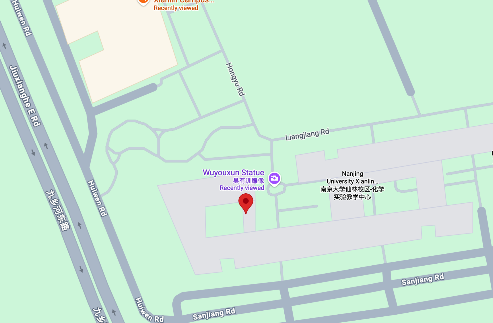

With dream.
We are seeking highly motivated students and researchers who are curious and excited to tackle fundamental questions in Spatial Aging Biology. Prior experience in molecular biology, neuroscience, bioinformatics, or related fields is welcome but not required. What matters most is creativity, persistence, and a strong interest in discovery.
If you are passionate about science and interested in exploring the frontier of spatial aging biology, we encourage you to reach out and join us in building an exciting and impactful research program.
Please send your inquiry to jieyu.wu@nju.edu.cn for available positions, from rotation student, PhD student, postdocs to research scientists.

Address
Nanjing University
Xianlin Avenue 163
Qixia District
Nanjing, Jiangsu
Email
jieyu.wu@nju.edu.cn
Open Positions
We are recruiting:
• PhD students
• Postdoctoral fellows
• Research assistants